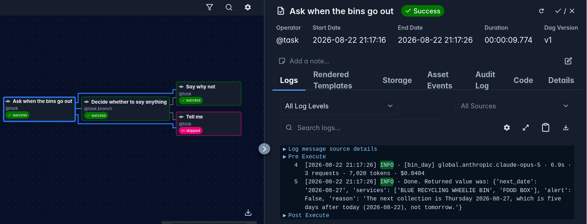
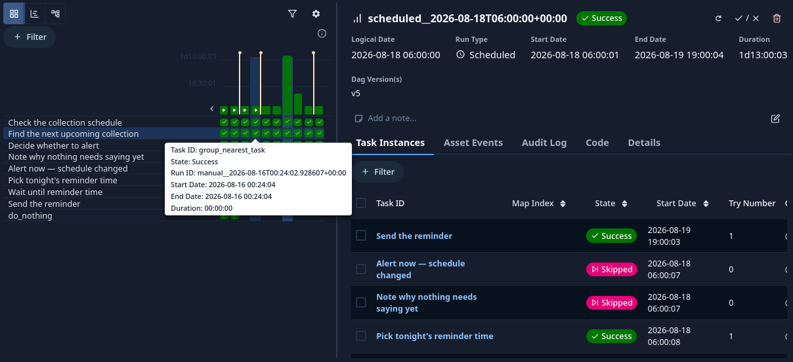
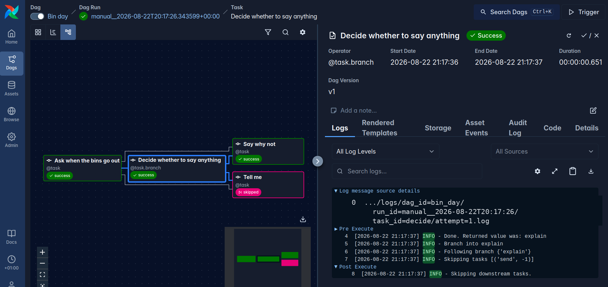
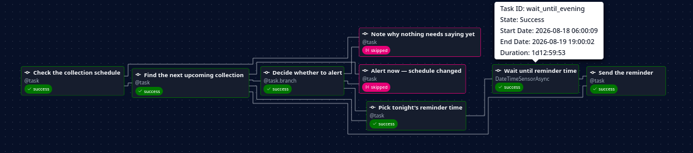

Fast Iteration for AI Capabilities in Airflow
Engineering Lead @ Amazon
2026-09-01


That's a whole month of rubbish in my garden
* My setup included custom context and tools. Measure your own.
Before you delegate,
build the check that tells you it's right.
You could also call it executable intent.
class BinDayFacts(BaseModel): next_collection_date: date containers_due: set[str] def test_ordinary_week(): facts = ask_agent(recorded("2026-08-22")) # the council's real response, saved assert facts == BinDayFacts( next_collection_date=date(2026, 8, 27), containers_due={"BLUE RECYCLING WHEELIE BIN", "FOOD BOX"}, )
PASSED test_ordinary_week FAILED test_collection_pulled_forward - containers_due={'BLACK RUBBISH WHEELIE BIN', 'FOOD BOX'} + containers_due=set()
This can be called an AI eval. It is a deterministic assertion on AI-generated output.
def test_alerts_only_when_the_collection_is_tomorrow(): assert decide(facts(next="2026-08-27"), today="2026-08-26") == "send" assert decide(facts(next="2026-08-27"), today="2026-08-22") == "explain" def test_does_not_say_it_twice(): assert decide(facts(next="2026-08-27"), today="2026-08-26", already_alerted="2026-08-27") == "explain"
before claude -p "Do I need to put the bins out? …" --model opus --allowedTools WebFetch WebSearch Bash(curl:*)
* Trimmed for width. Or skip the hand-rolling: apache-airflow-providers-common-ai ships AgentOperator and AgentSkillsToolset.

* One capability, one recorded world, three runs per model. Illustrative of the method, not an authoritative comparison of these models.

Every lever so far has been inside a dag: the prompt, the model, the tools, the workflow.
Now my levers are: kill a worker · restart the triggerer · configure the schedulerCheap, because Airflow ships images. Just a compose file I can destroy.
I'm not building this feature. I want to know it works for my cases.
Here the check is a hypothesis. True or false doesn't matter. Either way I know.
Evals are not security.
2.1s user do I need to put the bins out? postcode <redacted> 6.2s Skill bin-day loaded 12.8s ToolSrch select:WebFetch ok 41.8s Bash fetch the council waste page ok 50.5s Bash inspect form fields and endpoints REFUSED 58.1s Bash inspect form fields REFUSED 62.4s Bash inspect form fields REFUSED 71.6s Bash inspect form fields and endpoints ok 81.2s Bash look up addresses for postcode ok 92.5s Bash extract UPRN for <redacted> REFUSED 101.7s Bash fetch collection schedule for UPRN ok 111.4s Bash clean up temporary lookup files REFUSED 115.8s Bash clean up temporary lookup files REFUSED 124.2s answer Thursday 27 Aug · BLUE RECYCLING WHEELIE BIN, FOOD BOX
* Trimmed for width: 14 of 26 events. 16×Bash, 2×Read, 1×Skill, 1×ToolSearch. 989,639 tokens for three rows of a table — and ~30k of that was my harness, before the task started.
You were never going to predict every case. We didn't manage that with ordinary software either.
def test_ordinary_week(): ...
def test_collection_pulled_forward(): ...
+ def test_bank_holiday_moves_the_whole_week():
+ facts = ask_agent(recorded("2026-08-25"))
+ assert facts.next_collection_date == date(2026, 8, 28)
A qualifying exam for a domain, before we let an agent work in it.
Evals are not security. If something must never happen, prevent it rather than evaluating it.
https://linktr.ee/alex.guglielmone.nemi
Writings · Github · LinkedIn
Alex Guglielmone Nemi · Airflow Summit 2026 · Austin, TX
Tux, after Larry Ewing